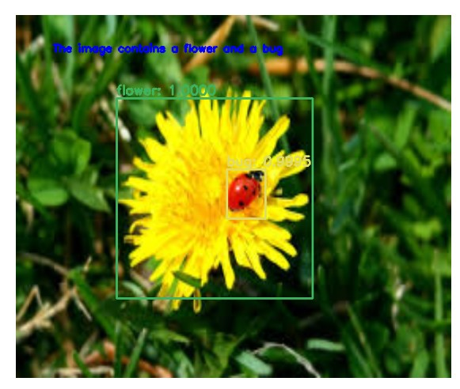
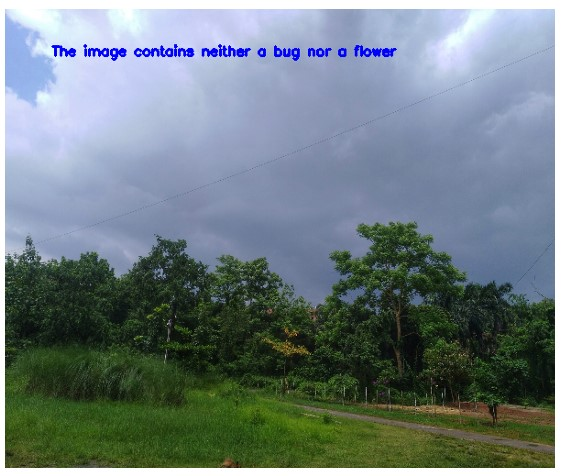
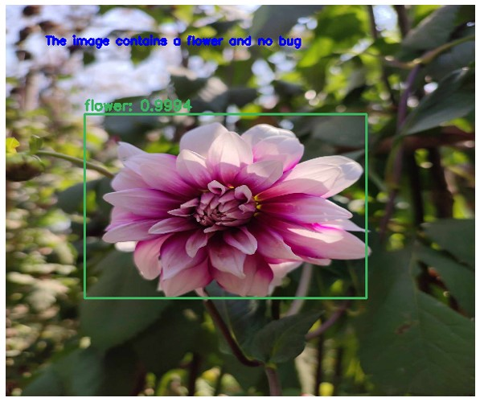
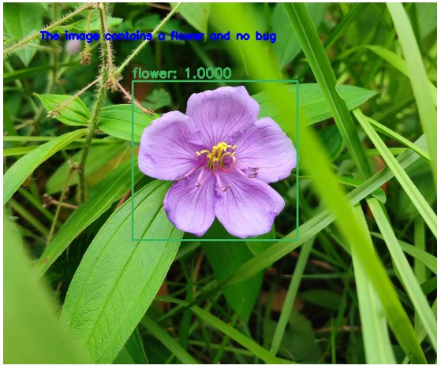
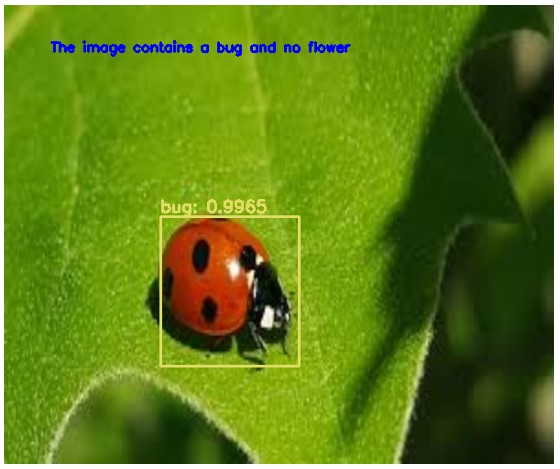
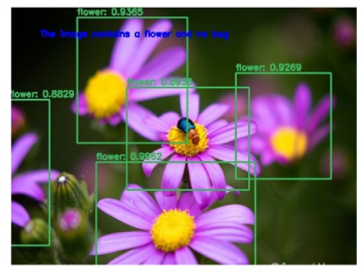

Overview
A system was developed to detect whether a given image contains flowers or bugs, leveraging the YOLOv3 (You Only Look Once) algorithm for object detection. This project addressed the challenge of accurately identifying and localizing multiple overlapping objects within images. The approach utilized the YOLOv3 algorithm, which employs anchor boxes for detecting multiple objects, even in cases where objects overlap. To further enhance detection accuracy, a non-max suppression algorithm was applied for each class to eliminate redundant bounding boxes and ensure precise localization. The dataset for this study consisted of 300 images containing various combinations of bugs, flowers, both, or none. These images were manually labeled using the LabelImg tool, providing the annotations required for model training. The YOLOv3 model was trained on this custom dataset to learn the patterns and features necessary for detecting bugs and flowers in diverse scenarios.
Result
The results demonstrated that the model was effective in detecting the location of bugs and flowers in the majority of cases. It performed particularly well in scenarios with overlapping objects, accurately identifying and distinguishing between multiple objects within a single image. However, the model faced challenges in detecting bugs in certain images, indicating areas for potential improvement in the training process or dataset augmentation.






By extending the scope to other object classes and improving accuracy with larger and more diverse datasets, the project could become an essential tool in precision agriculture, biodiversity studies, and environmental monitoring